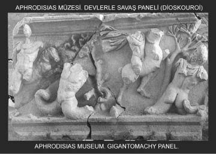

Mitologyanın sözünü ettiği o ürkünç yaratıklara günümüzde ister "masal hayvanları" densin, ister "devler, canavarlar" densin, onlara yakıştırılacak hiçbir söylem onların önemini küçültemezdi. Çünkü krallar, isyancı kahramanlar ve de tanrılar bütün büyüklüklerini onlara borçluydular... İşin gerçeğine bakıldığında da bu acımasız canavarlar ve devler olmasaydı zaten tanrılara, kahramanlara ve de krallara gerek kalmayacaktı!.. Canavarlar; onların varlık nedenleriydiler...

Devlerin yaşadıkları ortamlar, Akdeniz coğrafyasının belli yerlerindeydi. Bu yaratıkların çoğu da zaten yaşadıkları ortamla bütünleşmişlerdi. Örneğin kral Minos'un canavarı Minotauros, Girit'te bir Labirintos'ta yaşıyordu. Skülla, Sicilya adasında; Neme Aslanı Neme'de; Kalidon Domuzu da Kalidon'da yaşıyordu...
Canavarlar çok zaman bir tanrıya bağlıydılar; onun güdümünde insanlara ve halklara dehşet saçıyorlardı. Genellikle ana-babaları tanrı olan bu canavarlar, ilk ve en eski canavarlardı. Çünkü onlar, evrenin yaratılışıyla birlikte tanrılarla ve insanlarla zamandaş olarak ortaya çıkmışlardı... Ama bazen de canavarlar, tanrı ya da tanrıçaların manevi çocuklarıydı; onların yetiştirmeleriydi. Örneğin Kalidon Domuzu, tanrıça Artemis'in koruyup kolladığı bir canavardı. Kalidon denen ülkenin kralını cezalandırmak için tanrıçanın saldığı bu canavar, aslında halkın ürettiği bütün tahıl ve meyveleri daha tarladayken çiğneyip eziyordu. Tanrıça Artemis'in yarattığı bu domuz, el ele verip güçlerini birleştirebilen kahramanlar sayesinde yok edilebildi...
Gene örneğin Minotauros denen ve kral "Minos'un Boğası" anlamına gelen korkunç canavarı, Yunanistanlı Teseus tek başına öldüremedi. Artık birlikte yaşayacakları sözünü verip kandırdığı kral Minos'un güzel kızı Aryadne'nin yardımıyla, onu Labirintos'un karanlıklarında yok edebildi...
Sayıları çok fazla olmamakla birlikte kral Oidipus'un akıl gücüyle alt ettiği Sfinks (Sphynx) türü entelektüel canavarları da özellikle unutmamak gerekirdi... Tebai kentinin girişindeki yüksek ve kayalık bir tepede oturan ve bedeni uçan bir aslanın gövdesine benzeyen, kadın yüzlü, kadın göğüslü bu canavar, bütün ülkeyi halkıyla birlikte kasıp kavuruyordu... Öyle ki kente girip çıkan kim olursa olsun, Sfinks ona birkaç soru soruyor, bilemeyince de onu öldürüyordu...
Günlerden bir gün, gerçekten yürekli, Oidipus adlı akıllı bir yabancı geldi sınıra. Kayalığın tepesindeki aslan bedenli Sfinks, herkese sorduğu soruyu yineledi ona da, ama hiç beklemediği doğru yanıtlar alınca çok öfkelendi; kendini o yüksek kayalığın tepesinden aşağıya attı bütün hışmıyla ve düştüğü yerde de paramparça oldu...
Tebaililer, ülkelerini büyük bir yıkımdan kurtaran Oidipus'u kralları olarak tahta oturttular. Ne var ki aklıyla canavarı yenen iyi yürekli kral Oidipus, her şeye karşın yeni geldiği ve sığındığı Tebai'de, öz anasıyla evlenmek gibi bir yazgıdan kendini kurtaramayacaktı!..
Gene de bütün çağlarda, halkların içinden çıkan kahramanlar; insan düşmanı canavarlarla her zaman başa baş dövüşüyorlardı. Ve kahramanlar; er geç yenilip yaşamlarını yitirseler de, onların bu savaşımları, korkular içindeki insanları yüreklendiriyor, onları insanca yaşayacakları Altınçağlarına doğru daha büyük bir coşkuyla yönlendiriyordu...
Örneğin Bellerofontes adlı kahraman, uçan atı Pegasos'un yardımıyla, ortalığı kasıp kavuran canavar Himayra'yı (Khimaira) öldürdü. Gene kanatlı atı Pegasos'la tek başına Olimpos tanrılar ülkesine tırmanabileceği savını attı ortaya. Gerçekten de kanatlı atıyla Olimpos'a doğru tırmanmaya başladı. Baştanrı Zeus da, çaktırdığı şimşek ve yıldırımlarla, onu yeryüzüne doğru, atıyla birlikte gerisin geri savuruverdi!.. Ama onun örneğinden yüreklenen insanlar, hep gökyüzünün daha da derinliklerine ulaşma sevdasıyla yanıp tutuşmaya başladılar ve yükseldikçe daha da tutuştular...
Gene antikçağın en ünlü kahramanı Herakles'in yerine getirdiği on iki görevinin sonuncusunda olduğu gibi, kahramanın günışığında doya doya yaşayabilmesi ve de ışığın daha ötelerine ulaşabilmesi için, yeraltındaki Ölüler Ülkesi'nin karanlığını yenmesi ve oradaki canavar köpek bekçi Kerberos'u alt etmesi gerekiyordu... O yüzden Baştanrı Zeus'la kraliçe Alkmene'nin aşklarından doğan yarı-ölümlü Herakles, yeraltındaki Ölüler Ülkesi'ne tek başına indi ve oranın bekçisi olan çok başlı canavar köpek Kerberos'u yendi.
Bu görevini istendiği gibi yerine getirdikten sonra, yeryüzünde yeniden günışığına kavuşabildi...
Hiçbir kahraman tek başına canavarlarla, hele hele tanrılarla baş edemezdi!.. Ancak özgürlüğe ve insanca yaşamaya gönül vermiş diğer kahramanlarla el ele vererek üstesinden gelebilirdi canavarların...
O yüzden antikçağın soylu sanatçıları, bu kahramanları tiyatrolaştırdılar. Onları sahnede izleyen insanlar da içlerinde saklı o uçsuz bucaksız doruklarının ayırdına vardılar. Böylece yüreklenen insanlar, o gizli doruklarına doğru sürekli tımanmaya başladılar...